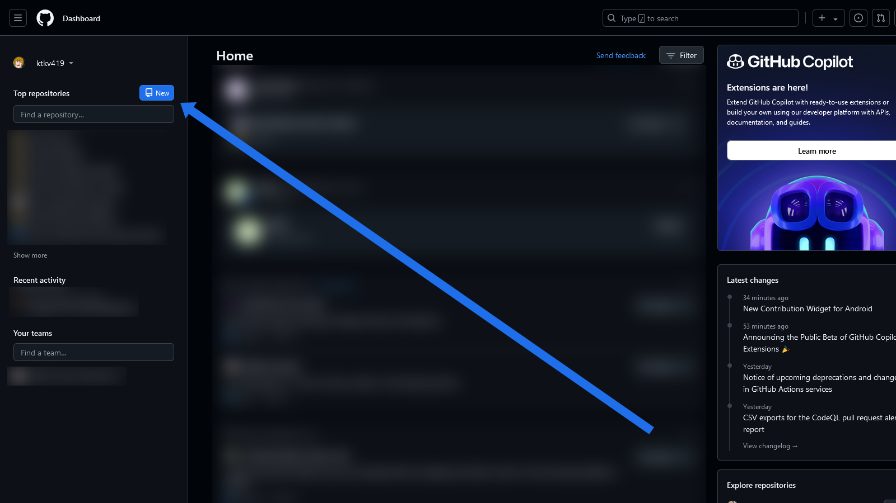
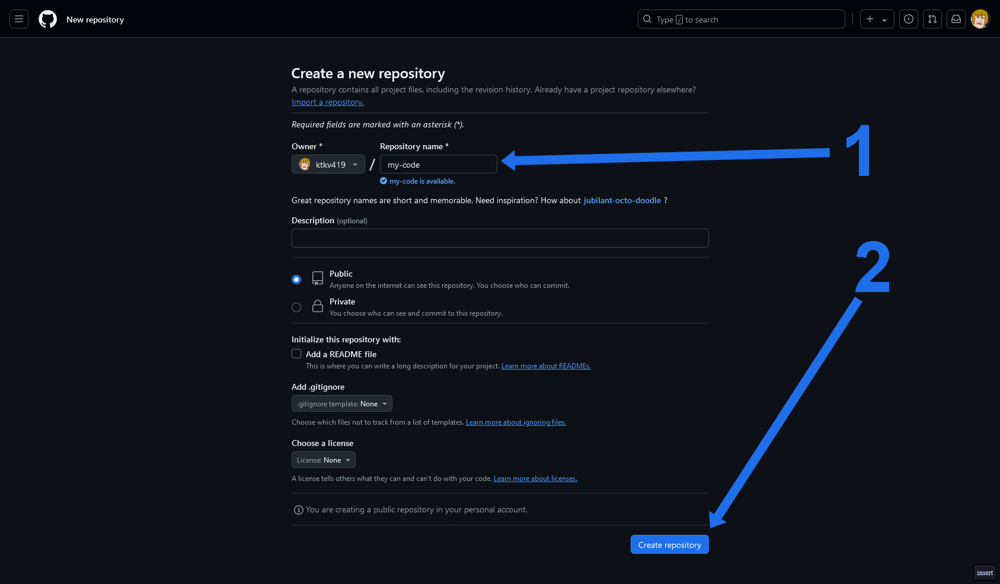
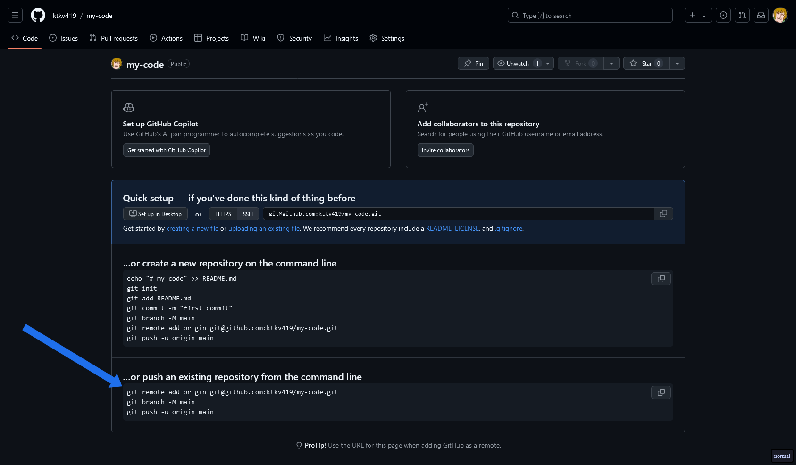
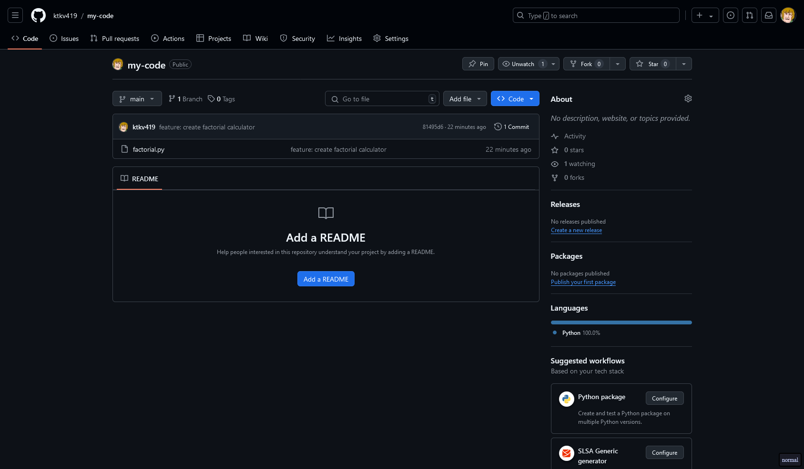
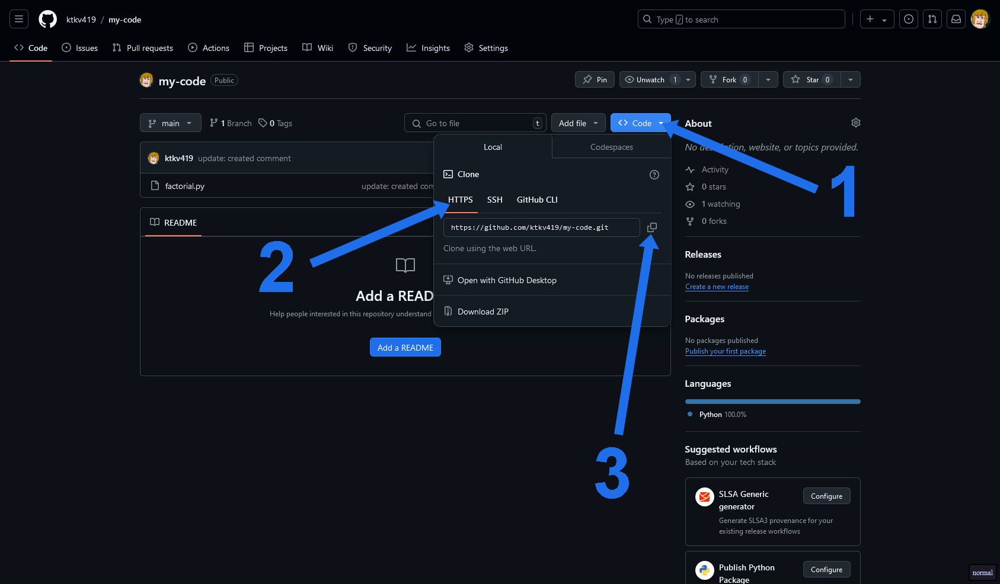

Git
Version Control System (VCS)
Система управления версиями
инструмент, который помогает отслеживать и управлять изменениями в файлах проекта
BEWARE OF THE PIPELINE

Основные задачи VCS
Отслеживание изменений
Хранение версий
Совместная работа
История изменений
Резервное копирование
Типы систем управления версиями
Локальные системы управления версиями
LVCS
- работает только на одном компьютере
- изменения сохраняются в виде различных версий файлов
- невозможность совместной работы над проектом
Централизованные системы управления версиями
CVCS
- данные хранятся на одном центральном сервере
- разработчики подключаются только для получения или отправки изменений
- при недоступности центрального сервера работа над проектом может остановиться
Типы систем управления версиями
Распределённые системы управления версиями
DVCS
- каждая копия проекта, хранящаяся на компьютере пользователя
- копия является полноценной версией репозитория
- позволяет работать в автономном режиме, синхронизируя изменения с центральным сервером
Git
система управления версиями, предназначенная для отслеживания изменений в коде
Особенности работы
Распределённость
копия проекта хранится на компьютере пользователя
Безопасность
каждая версия сохраняется и может быть восстановлена
Эффективность
git следит не за файлами, а за изменениями в них
Git
- Был разработан
Линусом Торвальдсомв 2005 году - Изначально использовался для управления разработкой ядра Linux
- С британского сленга означает "мерзкий человек"

Основные понятия Git
Репозиторий
repository
хранилище проекта с полным набором всех файлов и историей изменений
Коммит
commit
точки изменений в проекте
gitGraph commit
Основные понятия Git
Ветвь
branch
независимая линия разработки
gitGraph commit commit commit commit
Удалённый репозиторий
remote repository
сервер, на котором хранится репозиторий
Слияние
merge
объединение изменений из одной ветви в другую
gitGraph commit branch dev commit checkout main merge dev
Основные понятия Git
Клонирование
clone
создание копии удалённого репозитория на локальной машине
Индекс
staging area
область подготовки, где хранятся файлы, которые будут включены в следующий коммит
Основные понятия Git
голова
HEAD
Установка GIT
Установка GIT
Если вы знаете, что делаете
Windows
PS C:\Users\pasha> winget install git.git
apt
pasha@localhost:~ sudo apt install git
pacman
pasha@localhost:~ sudo pacman install git
weak zone
GitHub Desktop

Sourcetree

Работа с git
Создание репозитория
$ git init [название проекта]
Можно инициировать без [название проекта]
Клонирование репозитория
$ git clone [url-адрес]
[url-адрес] - адрес репозитория на GitHub, GitLab и тд.
Индексирование файла
$ git add [файл]
Можно использовать ., чтобы проиндексировать все измененные файлы
Создание коммита
$ git commit -m "[сообщение с описанием]"
Различия прошлого коммита и непроиндексированных файлов
git diff
Можно указать файл, если нужно смотреть разницу не всего проекта
Перечислить все изменения
$ git status
Показывает различия файлов с последним коммитом
$ git diff --staged
Отмена индексации файла (с сохранением изменений)
$ git reset [файл]
Различия прошлого коммита и непроиндексированных файлов
$ git diff
Можно указать файл, если нужно смотреть разницу не всего проекта
Перечислить все изменения
$ git status
Показывает различия файлов с последним коммитом
$ git diff --staged
Отмена индексации файла (с сохранением изменений)
$ git reset [файл]
Показать все ветки
$ git branch
$ main ± git branch
* main
gitGraph commit
Создаёт новую ветку
$ git branch [имя ветки]
$ main ± git branch dev
$ main ± git branch
dev
* main
gitGraph commit branch dev
Переключение веток
$ git checkout [имя ветки]
$ ~/my-code main ± git checkout dev
Switched to branch 'dev'
$ ~/my-code dev ± git branch
* dev
main
gitGraph commit branch dev checkout dev
Слияние [имя ветки] в текущую ветку
$ git merge [имя ветки]
$ ~/my-code dev ± git checkout main
Switched to branch 'main'
Your branch is up to date with 'origin/main'.
$ ~/my-code main ± git merge dev
gitGraph commit branch dev commit checkout main merge dev
Показать коммиты в ветке
$ git log
$ ~/my-code main(1) 130 ± git log --oneline
5f230c7 (HEAD -> feature/tests) sync commit
8bda223 fix: fix tests for factorial functions
c4e9e7f test: add tests to factorial function
7978f95 (origin/main, origin/HEAD, main, dev) update: created comment
81495d6 feature: create factorial calculator
Можно использовать без oneline
Перейти к предыдущему коммиту
$ git checkout [хэш коммита]
$ ~/my-code main ± git checkout 7978f95
Note: switching to '7978f95'.
You are in 'detached HEAD' state.
HEAD is now at 7978f95 update: created comment
$ ~/my-code 7978f95 ±
Скачать всю историю из удалённого репозитория
git fetch
Загрузить все изменения локальной ветки в удалённый репозиторий
git push -u origin [ветка]
Загружает историю из удалённого репозитория и объединяет её с локальной
git pull
pull = fetch + merge
используется для отмены изменений, внесённых в один или несколько коммитов, создавая новый коммит, который отменяет эффекты указанного коммита создавая новый коммит
git revert
pull = fetch + merge
Это норма

Это норма, но так не надо

Первоначальная настройка
1. Устанавливаем имя, которое будет отображаться в поле автора у выполняемых вами коммитов
$ git config --global user.name "Kutikov Pavel"
2. Устанавливаем адрес электронной почты, который будет отображаться в информации о выполняемых вами коммитах
$ git config --global user.email "kutikovpasha@gmail.com"
commit 43ba095677a0f1806bc5d69fbc8afaf76578904f (HEAD -> test_test, origin/main, origin/HEAD, test-test, main)
Author: Pasha Kutikov kutikovpasha@gmail.com
Создаем репозиторий на GitHub
Переходим в папку с кодом
cd "название папки"
$ cd my-code
my-code
└── factorial.py
Создаем новый репозиторий в текущей папке
git init
$ ~/my-code git init
hint: Using 'master' as the name for the initial branch. This default branch name
hint: is subject to change. To configure the initial branch name to use in all
hint: of your new repositories, which will suppress this warning, call:
hint:
hint: git config --global init.defaultBranch name
hint:
hint: Names commonly chosen instead of 'master' are 'main', 'trunk' and
hint: 'development'. The just-created branch can be renamed via this command:
hint:
hint: git branch -m name
Initialized empty Git repository in /home/pasha/my-code/.git/
$ ~/my-code master* ±
Добавляем существующие файлы в стейджинг
git add .
$ ~/my-code master* ± git add .
. - добавить все файлы в папке
Можно и желательно потом добавлять только те файлы, которые подходят под тему коммита
$ ~/my-code master* ± git add factorial.py
Создаем коммит
$ ~/my-code master ± git commit -m "{название коммита}"
[master (root-commit) 81495d6] feature: create factorial calculator
1 file changed, 1 insertion(+)
create mode 100644 factorial.py
-m "..." - название коммита обязательно, должно быть кратким и содержательным
или
$ ~/my-code master ± git commit
У вас откроется терминальный текстовый редактор
{название коммита}
{описание коммита}
# Please enter the commit message for your changes. Lines starting
# with '#' will be ignored, and an empty message aborts the commit.
#
# On branch master
# Changes to be committed:
# modified: factorial.py
#
Создаем репозиторий на github
Создаем репозиторий на github
1 - пишем название репозитория
Копируем
Синхронизируем локальный и удаленный репозитории
1. Добавляем удаленный репозиторий
$ ~/my-code master ± git remote add origin git@github.com:ktkv419/my-code.git
2. Меняем название ветки на main
$ ~/my-code master ± git branch -M main
3. Пушим свою версию проекта на github
$ ~/my-code main ± git push -u origin main
Enumerating objects: 3, done.
Counting objects: 100% (3/3), done.
Writing objects: 100% (3/3), 246 bytes | 246.00 KiB/s, done.
Total 3 (delta 0), reused 0 (delta 0), pack-reused 0
To github.com:ktkv419/my-code.git
* [new branch] main -> main
Branch 'main' set up to track remote branch 'main' from 'origin'.
Проверяем, что репозитории успешно синхронизировались
Вносим изменения и синхронизируем
Добавляем существующие файлы в стейджинг
git add .
$ ~/my-code master* ± git add .
Создаем коммит
$ ~/my-code master ± git commit -m "{название коммита}"
[master (root-commit) 81495d6] feature: create factorial calculator
1 file changed, 1 insertion(+)
create mode 100644 factorial.py
Пушим свою версию проекта на github
$ ~/my-code main ± git push -u origin main
Enumerating objects: 3, done.
Counting objects: 100% (3/3), done.
Writing objects: 100% (3/3), 246 bytes | 246.00 KiB/s, done.
Total 3 (delta 0), reused 0 (delta 0), pack-reused 0
To github.com:ktkv419/my-code.git
* [new branch] main -> main
Branch 'main' set up to track remote branch 'main' from 'origin'.
Работаем с существующим репозиторием
Копируем ссылку репозитория
Если у вас добавлен ssh ключ, то лучше используйте SSH вместо HTTPS
Клонируем репозиторий
$ ~ git clone https://github.com/ktkv419/my-code.git
[master (root-commit) 81495d6] feature: create factorial calculator
1 file changed, 1 insertion(+)
create mode 100644 factorial.py
$ ~ ls
my-code
Работаем в данном репозитории
Если нужно "переехать" в другой репозиторий:
$ ~/my-code master ± git remote add origin {ссылка на ваш репозиторий}
homework
- Зарегистрироваться на GitHub
- Пройти опрос в Google форме
Структура работы с git
GitFlow
модель ветвления для работы с системой контроля версий Git, разработанная для удобного управления ветками в больших и средних проектах
gitGraph commit branch dev commit branch feature/one commit commit commit checkout dev commit branch feature/two commit commit checkout dev commit merge feature/two merge feature/one checkout main merge dev checkout dev commit
Основные ветки
main
основная ветка, содержащая стабильную и готовую к выпуску версию продукта
dev
ветка, в которой ведётся основная разработка
gitGraph commit branch dev commit commit commit checkout main merge dev checkout dev commit commit checkout main merge dev checkout dev commit
Дополнительные ветки в GitFlow
feature
Ветви, создаваемые для работы над отдельной функциональностью
- именуются по схеме
feature/название-фичи - создаются от ветки
dev - в конце работы сливаются обратно в
dev
hotfix
используются для срочного исправления критических ошибок в продакшн-версии продукта, которые нужно устранить как можно быстрее
- именуются по схеме
hotfix/название-бага
gitGraph commit branch dev commit branch feature/one commit commit commit checkout dev commit branch feature/two commit commit checkout dev commit merge feature/two merge feature/one checkout main merge dev checkout dev commit checkout main commit branch hotfix/unresponsive-ui commit checkout main merge hotfix/unresponsive-ui
danger zone
git rebase
main или
dev
не используйте rebase на опубликованных ветках
git rebase
1. Определите с какого коммита вы работали над этой веткой
$ ~/my-code feature/tests ± git log --oneline
5f230c7 (HEAD -> feature/tests) sync commit
8bda223 fix: fix tests for factorial functions
c4e9e7f dsajdklas djkasldjkl asdjkl
7978f95 (origin/main, origin/HEAD, main, dev) update: created comment
81495d6 feature: create factorial calculator
$ git rebase -i 81495d
git rebase
2. Определите, что вы хотите сделать с коммитами
pick 7978f95 update: created comment
pick c4e9e7f dsajdklas djkasldjkl asdjkl
pick 8bda223 fix: fix tests for factorial functions
pick 5f230c7 sync commit
reword
Изменить сообщение коммита
fixup
Объединяет коммит с предыдущим
squash
Объединяет коммит с предыдущим и создает на их новый коммит
git rebase
2. Определите, что вы хотите сделать с коммитами
pick 7978f95 update: created comment
reword c4e9e7f dsajdklas djkasldjkl asdjkl
pick 8bda223 fix: fix tests for factorial functions
squash 5f230c7 sync commit
git rebase
3. Завершите ребейз
$ ~/my-code feature/tests ± git log --oneline
212584b (HEAD -> feature/tests) Combine two into one
d3ea25f feat: add tests to factorial function
7978f95 (origin/main, origin/HEAD, main, dev) update: created comment
81495d6 feature: create factorial calculator
git cherry-pick
Позволяет выбирать коммиты из другой ветки в текущую
не является заменой для merge и rebase
Когда cherry-pick актуален:
- Вы сделали коммит не на той ветке
- У вас критический баг в основной ветке
- Вы работаете в тестовой ветке и вам нужно потестить изменения из другой ветки
Коммит ded5648 оказался не в той ветке
$ ~/my-code main ± git branch
feature/tests
* main
$ ~/my-code main ± git log --oneline
ded5648 (HEAD -> main, origin/main, origin/HEAD) change: change logic of factorial function
212584b (feature/tests) Combine two into one
d3ea25f feat: add tests to factorial function
7978f95 update: created comment
81495d6 feature: create factorial calculator
gitGraph commit commit branch feature/tests commit commit checkout main commit checkout feature/tests
1. Переходим в ветку, где должен был быть коммит
$ git checkout feature/tests
2. Делаем cherry-pick коммита из main
$ git cherry-pick ded5684
gitGraph commit commit branch feature/tests commit commit checkout main commit checkout feature/tests commit
3. Удаляем ненужный коммит из main
$ ~/my-code feature/tests ± git checkout main
Switched to branch 'main'
Your branch is up to date with 'origin/main'.
$ ~/my-code main ± git checkout master
$ ~/my-code main ± git reset HEAD~1
gitGraph commit commit branch feature/tests commit commit commit
git reflog
просматривает историю изменения голов веток на протяжении вашей работы для поиска коммитов, которые вы могли внезапно потерять, переписывая историю
- branch
- commit
$ ~/my-code main ± git log --oneline
a570707 (HEAD -> main, origin/main, origin/HEAD) feat: commit 3
bb7409e feat: commit 2
e17d7c5 feat: commit 1
81495d6 feature: create factorial calculator
gitGraph commit commit commit commit
1. Случайно возвращаем ветку к коммиту e17dc5
$ git reset --hard e17d7c5
gitGraph commit commit

2. Обращаемся к reflog
$ main ± git reflog
e17d7c5 (HEAD -> main) HEAD@{0}: reset: moving to e17d7c5 <----------------
a570707 (origin/main, origin/HEAD) HEAD@{1}: commit: feat: commit 3
bb7409e HEAD@{2}: commit: feat: commit 2
...
3. Восстанавливаем коммит
$ git reset e17d7c5
gitGraph commit commit commit commit
git submodules
Позволяет хранить чужие библиотеки (с контролем версий) в своем репозитории
1. Создаем папку под подмодули
$ main ± tree
.
├── index.js
└── lib
2. Добавляем подмодуль к себе в репозиторий
$ main ± cd lib
$ main ± git submodule add https://github.com/lodash/lodash.git
$ ~/my-code main(+0/-0) ± tree
.
├── index.js
└── lib
└── lodash
├── ...
...
$ main ± git clone https://github.com/ktkv419/my-code.git
$ main ± tree
.
├── index.js
└── lib
$ main ± git submodule update --init --recursive
recurse-submodules, чтобы автоматически скачивать и подмодули
$ main ± git clone --recurse-submodules https://github.com/ktkv419/my-code.git
$ ~/my-code main(+0/-0) ± tree
.
├── index.js
└── lib
└── lodash
├── ...
...
Ищем все изменения строки
git log -L{строка},{строка}:{название файла}
$ ~/homeserver-docker main ± git log -L186,186:docker-compose.yml
commit 7728d452e826b698a8be590c7560ba7cfca98ecc (HEAD -> main, origin/main, origin/HEAD)
@@ -186,22 +186,1 @@
+ # wireguard:
commit c5afc483322f1165388a5365624b900f1fc7e495
@@ -209,13 +186,22 @@
+ wireguard: